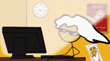
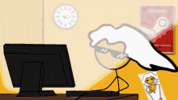

Yo, I am Preston Corpuz and I am 16 years old. I was born and raised in Oahu, Hawaii. All my life I lived in Ewa Beach. I was born on May 24. I decided to take AP Computer Science Principles because I think it is fun and it can be related to a future career I hope to have as a Computer Engineer.
I don't really have any interesting hobbies. I am just an average dude who likes to mostly play video games. I like to play FPS, Moba, and adventure games when I am bored. When I don't play video games though I am mostly playing guitar or ukulele. If I feel extremely bored and I feel like going somewhere, I'll go to the beach or cruise somewhere with my friends and just hang.
 
